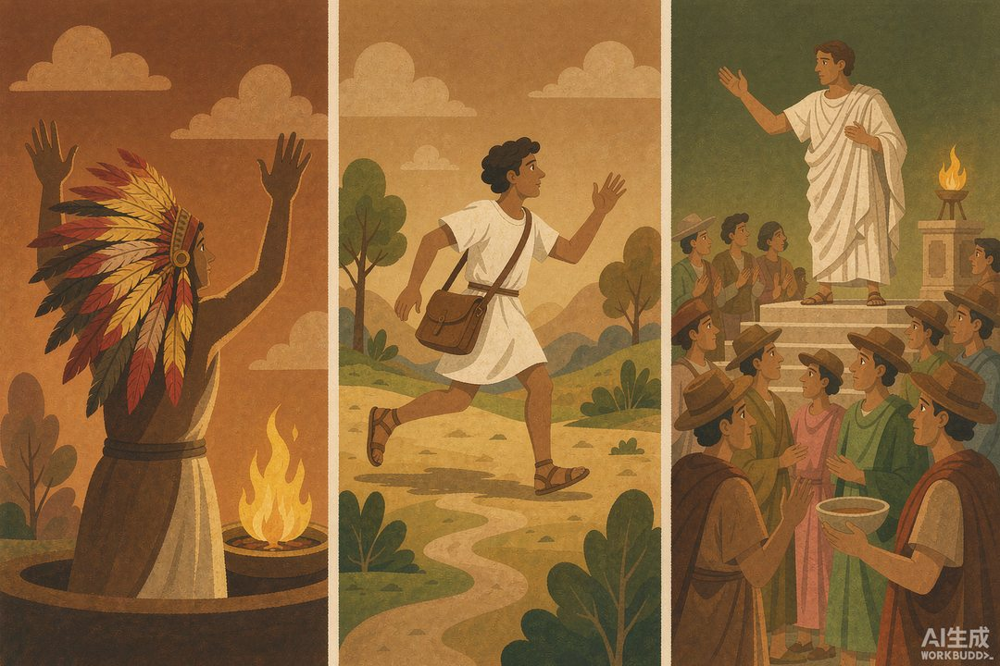
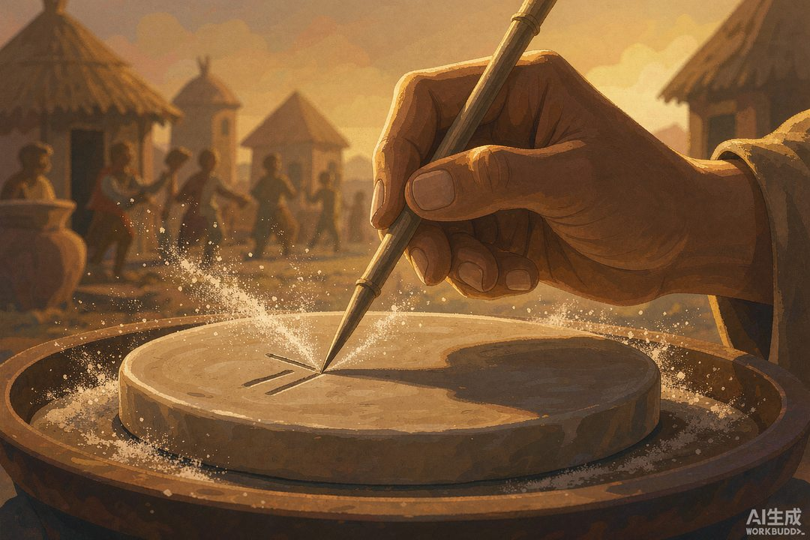

|
信息传播那些事儿 · 卷一 信息的黎明 · 第 18 篇 · 小结 |
|
卷一小结：文字出现前夜，信息在谁手里？ —— 离神最近的、腿最长的、嗓门最大的 |
▲ 篝火烧到黎明——卷一的旅程，在这里回头（AI 生成示意图）
|
十八站走完，篝火烧到天亮。这一站不赶路，坐下来烤个火，把整段旅程串成一张地图：文字出现之前，人类是怎么把信息玩出整个行业的？权柄在谁手里？以及——为什么文字一登场，这一切立刻全乱了。 |
还记得第一站那堆篝火吗？我们的起点特别不高大上：人是一种爱聊闲话的动物，语言一出场，主要功能可能不是交换"哪有狮子"，而是交换谁的八卦。围绕那堆火，人类把信息变成了一起玩的社交货币。十七站之后再看，那堆火星子已经燎原——嘴变成了广播，绳子变成了数据库，驿道变成了信息高速公路，广场变成了电视台，人脑变成了硬盘，连保密都长成了专业。
这一站，我们把火堆边的十七站串成一条线，然后回答卷一最要紧的一个问题：文字出现的前夜，信息的权柄，到底攥在谁手里？
一 | 十七站，其实是五段路 |
第一段路，嘴与手。语言让我们 gossip，壁画让故事第一次"存"在了岩壁上——搬不走，但能传代；结绳记事更进一步，绳子居然当起了账本和档案。信息的传播、存储、结构化三件事，全在文字发明前就各自有了雏形。
第二段路，火与鼓。人类突然意识到：消息可以不用人扛。烽火一昼夜里跑赢驿马六七倍，非洲鼓语在丛林里隔空"打电话"，雅典传令兵一口气跑死也要把胜利送到。这是人类第一次搭建物理信道网络——尽管它只能传预设的"警报码"。
第三段路，人与记忆。信息要人经手，就有了从业者：垄断神意的巫师，把史诗背成活硬盘的吟游诗人，以及这套系统的两个致命伤——口口相传必然走样（曾祖父怎么变成大英雄），坏消息天生比好消息跑得快（谣言的传播系数），而带着信息的人，随时可能被灭口。信道即风险，记忆即失真，这是前文字时代信息行业的两条天条。
第四段路，帝国入场。国家发现信息就是统治力，开始砸钱搞基建：烽燧法规（连点几个烽、烧几堆柴都写进条例）、波斯御道（七天跑完两千七百公里，纪录保持到电报）、罗马广场（一块白板办了三百九十年"日报"）。信息的生产与分发，第一次被制度化、标准化、官僚化。
第五段路，极限操作。一个民族把"不写下来"做到极致，用几十万人的大脑传了六百五十年律法还一字不错；另一个阵营把"藏起来"做到极致——密码棒、蜡板、头皮纹身。保真与保密，信息工程的两个终极难题，在文字时代之前就都打满了补丁。

▲ 巫师、信使、演说家——前文字时代的三种"信息权贵"（AI 生成示意图）
二 | 答案：三种人 |
所以，文字出现前夜，信息在谁手里？答案收拢成三种人。
第一种，离神最近的。巫师、祭司、占卜官垄断着"解释权"——神谕为什么下雨、兆头是什么意思，只有他说了算。信息的生产与解释在他手里。
第二种，腿最长的。信使、驿卒、传令兵垄断着"传输权"——消息能跑多快多远，取决于他们的腿和命。信息的传输在他手里，代价是命悬一线。
第三种，嗓门最大的。广场上的演说家垄断着"播报权"——同样一件事，他先说、他大声说、他有技巧地说，全城的认知就被他定了调。信息的影响在他手里。
注意一个共同点：这三种人的权力，全都建立在稀缺之上。信息稀缺——传不快、存不住、传不准、传不远，所以需要中间人。谁掌握了稀缺环节，谁就吃下了整个行业。这个逻辑放今天照样成立：每一次技术革命，本质都是把某个稀缺环节变成了富余——而旧权贵的位置，也就悬了。
三 | 普通人的处境：又饿又怕 |
在三种人的阴影下，普通人和信息的关系可以概括成两个字：又饿又怕。饿——想听消息没有渠道，村口闲话和小道消息就是全部"信息 diet"，于是谣言比官方通报跑得快得多；怕——信息差就是生死差，谁先知道敌人来了、粮价涨了，谁就能活命。前文字时代的"信息焦虑"，跟我们今天刷手机停不下来，是同一种饥饿。
而整个卷一其实还藏着一条暗线：普通人在偷偷"攒设备"。壁画是他们的大众画廊，鼓声是他们的社区广播，集市是他们的新闻现场。自上而下的信息网络，从来没能盖住自下而上的嗡嗡声。这条暗线，将在后面每一卷里反复出现——官方信道和民间信道永远在赛跑。

▲ 黎明的泥板：一只手刻下符号，整个信息世界即将改朝换代（AI 生成示意图）
四 | 大爆炸前一秒 |
现在，把镜头拉到黎明前最后一秒。场地已经备好：语言、壁画、结绳，传播、存储、结构化各自就位。需求已经烧到顶点：帝国要政令，商队要账目，寺庙要经典。技术也孵了一路：烽燧练出了编码，御道练出了网络，广场练出了发行，口传练出了校验，密码练出了保密。万事俱备，只欠一样东西——一套能同时表达万事万物、又人人可学的符号系统。
它马上就要来了。而它的降临，对三种人几乎是灭顶之灾：当知识可以刻在泥板上，"离神最近的"不再是唯一能解释世界的人；当文书可以沿着驿道整批奔跑，"腿最长的"沦为系统的零件；当公告可以贴上白板，"嗓门最大的"发现自己不过是众多声源之一。文字一出现，靠稀缺吃饭的中介，头一回尝到"技术性失业"的滋味。当然，历史没有这么简单——文字先是造了新贵（抄手、书吏、史官），再由印刷术掀第二次桌子，再由互联网掀第三次。每一轮的剧本都似曾相识：旧中介骂新工具是洪水猛兽，新中介踩着旧中介的肩膀上市。
下一卷，我们就走进这个新世界：字是有了，可载体重得要命——写一本书得扛一车竹简，皇帝批奏章一天要搬几十斤。信息第一次变得"可复制、可留存"，却也第一次背上了沉重的物流成本。新的争夺战，就在竹简和封泥之间展开。
📌 卷一路线图 · 五段旅程 | ||||||||||
|
|
🔔 下篇预告 · 第 19 篇《竹简的麻烦》——文字来了，但写一本书要扛一车竹简，秦始皇批奏章按斤称重。载体有多重，信息就有多贵。谁发明了减轻这份重量的办法，谁就改写了下一个时代的传播格局。 |
本篇为系列阶段性回顾，各站史实依据详见第 01—17 篇文末声明；路线图观点为作者综合整理。配图为 AI 生成示意图。